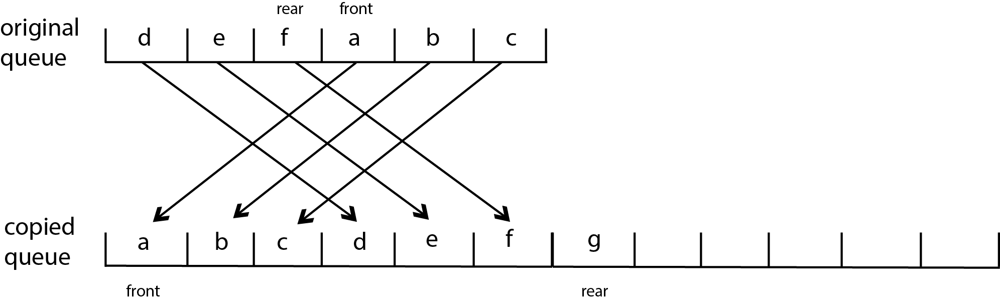

CMPT 202
Lab 7
Queues & Palindromes
Overview
This lab will first require implementing a Queue interface.
Afterwards, you will use your queue implementation, as well as
implementation of a stack from Lab 6, to design a second algorithm
that detects palindromes.
Only proceed with this lab once you have developed a solution to Lab
6 with stacks. Be sure you pass the following unit tests for your
Stack implementation before proceeding:
- TestStack.java
Queue Interface
You will implement the following interface for a Queue
- Queue.java
List-Based Queue
You will initially use a java.util.ArrayList to
implement the Queue. Name your implementation ListQueue.java
. Test your implementation with the following unit tests:
- TestQueue.java
Initially don't be concerned with failing the unit test testArrayQueue()
- you will implement a queue using an array that at a later step.
(To avoid a compile error, you should create a class ArrayQueue.java
and simply stub the methods in the Queue
interface for the time being.)
Array-Based Queue
Implement the Queue interface using an array.
Name your implementation ArrayQueue.java
Provide two constructors:
public ArrayQueue() - which creates a
default-sized array
public ArrayQueue(int capacity) - which
specifies an initial capacity.
You will need to also provide an ensureCapacity()
method. However, this is more difficult that what we have seen
thus far as you need to create a larger array, but copy the elements
to ensure the ordering of the queue remains intact. Carefully plan
how you will design your implementation to support this. The graphic
below describes how the elements would need to be copied.

In this example, the order of the elements in the queue are a, b, c,
d, e, f (that is, 'a' is at the front of the queue, 'f' is at the
rear of the queue.)
To copy the elements over to a new array to make room for inserting
'g', we must copy the elements in the order they appear in the
queue. Once we have copied them, we can insert g at the rear of the
new queue.
Notice how the values of front and rear must be adjusted from
positions in the old array to positions in the new array after the
elements have been copied. In the original queue
Make sure you correctly pass the TestQueue.java
unit tests.
Palindromes
In Lab #6 you used two stacks to detect a palindrome. To complete
this lab, modify that solution so that it uses a (1) one stack, and
(2) one queue.
What to Submit:
- Stack implementation (either ListStack.java
or ArrayStack.java)
- ListQueue.java
- ArrayQueue.java
- Palindrome checker